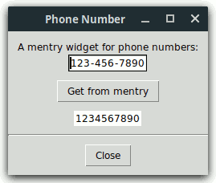
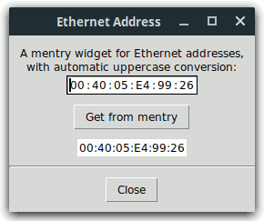
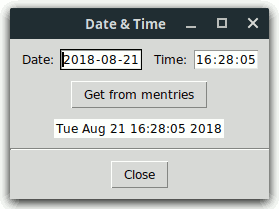
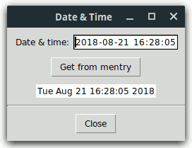
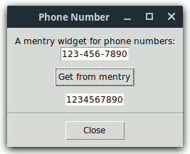

Mentry is a library package for Tcl/Tk versions 8.0 or higher, written in pure Tcl/Tk code. It contains:
A multi-entry widget consists of any number of entry widgets separated by labels, all embedded in a frame. Appropriately chosen configuration options make this conglomerate look like one single entry containing preinserted text pieces having invariant positions within the widget. The initial width of an entry child also determines the maximal number of characters that can be inserted into it; when reaching this limit in an entry having the input focus, the latter is set automatically to the next enabled entry child. The same action is triggered by typing a character contained in the label following the current entry, if the latter is non-empty.
Within a mentry widget, the Left, Right,
Home, End, and BackSpace keys work
across entry boundaries, while Control-Left and
Control-Right play the same role as Tab and
Shift-Tab in the case of ordinary entries.
Some of the above features are implemented with the aid of the widget callback package Wcb, written in pure Tcl/Tk code as well. The Mentry package requires version 3.1 or higher of Wcb, whose download location is
http://www.nemethi.de
It is very easy to create a multi-entry widget. For example, the command
mentry::mentry .me -body {3 - 3 - 4}
will create a mentry widget consisting of two entries of width 3 and one
of width 4, separated by "-" characters. With the
command
foreach w [.me entries] {
wcb::cbappend $w before insert wcb::checkStrForNum
}
you can make sure that the three entries will only accept numeric input, thus providing a comfortable and safe user interface for editing 10-digit phone numbers.
Mentry is available for free download from the same URL as Wcb. The
distribution file is mentry3.10.tar.gz for UNIX and
mentry3_10.zip for Windows. These files contain the same
information, except for the additional carriage return character preceding
the linefeed at the end of each line in the text files for Windows.
Mentry is also included in tklib, which has the address
http://core.tcl.tk/tklib
Install the package as a subdirectory of one of the directories given by
the auto_path variable. For example, you can install it as
a directory at the same level as the Tcl and Tk script libraries. The
locations of these library directories are given by the
tcl_library and tk_library variables,
respectively.
To install Mentry on UNIX, cd to the desired directory
and unpack the distribution file mentry3.10.tar.gz:
gunzip -c mentry3.10.tar.gz | tar -xf -
On most UNIX systems this can be replaced with
tar -zxf mentry3.10.tar.gz
Both commands will create a directory named mentry3.10, with
the subdirectories demos, doc, and
scripts.
On Windows, use WinZip or some other program capable of unpacking
the distribution file mentry3_10.zip into the directory
mentry3.10, with the subdirectories demos,
doc, and scripts.
The file mentryThemes.tcl in the scripts
directory is only needed for applications using the package Mentry_tile (see
next section).
Notice that in tklib the Mentry demos directory is replaced
with the subdirectory mentry of the examples
directory. Please take this into account when reading the examples below.
The Mentry distribution provides two packages, called Mentry and
Mentry_tile. The main difference between the two is that
Mentry_tile enables the tile-based, theme-specific appearance of mentry
widgets; this package requires Tcl/Tk 8.4 or higher and tile 0.6 or
higher. It is not possible to use both packages in one and the same
application, because both are implemented in the same mentry
namespace and provide identical commands.
To be able to access the commands and variables defined in the package Mentry, your scripts must contain one of the lines
package require mentry ?version? package require Mentry ?version?
You can use either one of the two statements above because the file
mentry.tcl contains both lines
package provide mentry ... package provide Mentry ...
Likewise, to be able to access the commands and variables defined in the package Mentry_tile, your scripts must contain one of the lines
package require mentry_tile ?version? package require Mentry_tile ?version?
Again, you can use either one of the two statements above because the file
mentry_tile.tcl contains both lines
package provide mentry_tile ... package provide Mentry_tile ...
You are free to remove one of the above lines from mentry.tcl
and mentry_tile.tcl, respectively, if you want to prevent the
corresponding packages from making themselves known under two different names
each. Of course, by doing so you restrict the argument of
package require to a single name per package.
Please note that ActiveTcl versions 8.5 and later use a modified
package mechanism, which only exports the all-lowercase names
mentry and mentry_tile. For this reason,
the examples below use the statement
package require mentry, and their tile-based counterparts
invoke the command package require mentry_tile.
Since the packages Mentry and Mentry_tile are implemented in the
mentry namespace, you must either invoke the
namespace import mentry::pattern ?mentry::pattern ...?
command to import the procedures you need, or use qualified names
like mentry::mentry. In the examples below we have chosen
the latter approach.
To access Mentry variables, you must use qualified
names. There are only three Mentry variables (and one more when using
Mentry_tile) that are designed to be accessed outside the namespace
mentry:
mentry::version holds the current version
number of the Mentry package.mentry::library holds the location of the
Mentry installation directory.mentry::usingTile has the value
0 in the package Mentry and the value 1 in
Mentry_tile.mentry::themeDefaults holds the
theme-specific default values of a series of Mentry configuration
options.As mentioned above, a mentry widget consists of entry and label widgets, embedded in a frame. While in the Mentry package all of these components are Tk widgets, the Mentry_tile package uses both Tk frame, tile entry, and Tk label widgets. Due to several incompatibilities between Tk and tile, it is currently not possible to replace all Tk widgets making up a mentry with their tile counterparts. Actually, the entry components of a tile-based mentry are embedded into Tk frame widgets, which in turn, together with the labels, are packed into a specially constructed tile entry rather than a frame. This somewhat complicated layout is needed because in several themes it is not possible to draw flat, borderless tile enty widgets.
From the above it follows that the package Mentry_tile will only work
as expected if the Tk frame and label commands
haven't been overridden by using namespace import -force
ttk::* at global scope. While earlier tile releases
suggested using this command at global scope for the really adventurous, in
newer tile versions this is considered a Really Bad Idea, causing many things
to break. Instead, you should explicitly invoke
ttk::frame, ttk::label, etc. whenever you want to
use a tile widget.
Another restriction to be taken into account (as of tile version 0.8) is
due to the fact that the (ttk::)style theme use
command can only be used to set the current theme, but not to retrieve
it. For this reason, the package Mentry_tile makes use of the variable
ttk::currentTheme or tile::currentTheme (depending
on the tile version), which is set by the ttk::setTheme or
tile::setTheme procedure. From this it follows that the
tile-based mentry widgets will only have the expected appearance if the
platform-specific default theme is either left unchanged or replaced with
another theme by invoking the procedure ttk::setTheme or
tile::setTheme, depending on the current tile version.
(See also the mentry::setTheme command.)
After these cautions concerning the use of tile, the rest of this section describes the differences between the packages Mentry and Mentry_tile.
The Mentry_tile package checks whether the required Tk and tile versions are present, by executing the commands
package require Tk 8.4
if {$::tk_version < 8.5 || [regexp {^8\.5a[1-5]$} $::tk_patchLevel]} {
package require tile 0.6
}
The second command above reflects the fact that, beginning with Tk 8.5a6, tile is integrated into the Tk core and therefore it should only be loaded explicitly when using an earlier Tk version.
Apart from this and the _tile suffix in the
package require command, the only difference (from the
programmer's point of view) between the packages Mentry and Mentry_tile is
related to the supported configuration options: The following Tk
(entry) widget options, present in the Mentry package, are not supported by
Mentry_tile, because they are not available for tile (entry) widgets:
-borderwidth, -disabledbackground,
-disabledforeground, -highlightbackground,
-highlightcolor, -highlightthickness,
-insertbackground, -insertborderwidth,
-insertofftime, -insertontime,
-insertwidth, -readonlybackground,
-relief, -selectbackground,
-selectborderwidth, and -selectforeground.
Notice that the -background option doesn't work as expected
if the current theme is plastik, tileqt,
vista, or xpnative, because these themes silently
ignore any attempt to change the background color of a tile entry widget.
Finally, take into account that, when using the tileqt theme,
the version number of the tile::theme::tileqt package must be
0.4 or higher, and tileqt itself won't work with tile versions
earlier than 0.7.
Let's resume the example mentioned in the
Overview in a bit more systematical manner. First, we will write a
procedure for creating a mentry widget that allows to display and edit
10-digit phone numbers and accepts any configuration options supported by the
mentry::mentry command:
#------------------------------------------------------------------------------ # phoneNumberMentry # # Creates a new mentry widget win that allows to display and edit 10-digit # phone numbers. Sets the type attribute of the widget to PhoneNumber and # returns the name of the newly created widget. #------------------------------------------------------------------------------ proc phoneNumberMentry {win args} { # # Create a mentry widget consisting of two entries of width 3 and one of # width 4, separated by "-" characters, and set its type to PhoneNumber # eval [list mentry::mentry $win] $args $win configure -body {3 - 3 - 4} $win attrib type PhoneNumber # # Allow only decimal digits in all entry children; use # wcb::cbappend (or wcb::cbprepend) instead of wcb::callback # in order to keep the wcb::checkEntryLen callback, # registered by mentry::mentry for all entry children # for {set n 0} {$n < 3} {incr n} { wcb::cbappend [$win entrypath $n] before insert wcb::checkStrForNum $win adjustentry $n "0123456789" } return $win }
The first argument win is the name of the widget, and the
keyword args represents a list of configuration options and
their values, just like in the case of the standard Tk widgets. The
value {3 - 3 - 4} of the -body option specifies that the mentry
should consist of two entries of width 3 and one of width 4, separated by
labels displaying the "-" character.
Each mentry widget may have any number of private attributes, which
can be set and retrieved with the aid of the attrib subcommand of the Tcl procedure
corresponding to the widget. We use this subcommand to define the
type attribute of the newly created widget and set it to the
value "PhoneNumber". Although this is not strictly
necessary, it will enable us to distinguish a phone number mentry from other
multi-entry widgets.
The mentry::mentry command registers the wcb::checkEntryLen callback with each entry
child of the mentry widget to restrict the number of characters that can be
inserted into it to the initial width specified in the -body
option. Besides this constraint, we want our entries to accept only
decimal digits, therefore we use the wcb::cbappend command to add the
procedure wcb::checkStrForNum
to the callback list of each entry child. By invoking wcb::callback instead of
wcb::cbappend (or wcb::cbprepend), we would replace
the callback list with the one consisting of the single element
wcb::checkStrForNum.
Now we know that each entry child of the mentry widget will only accept a
limited number of decimal digits. But are the widths of the entry
children large enough to hold the maximal number of 3 or 4 decimal digits,
respectively? In the case of a fixed-width font the answer is
definitely "yes", and the same holds true for most proportionally-spaced
fonts. There are, however, fonts in which not all decimal digits have
the same width. For this reason, we invoke the adjustentry subcommand for each
entry child, passing to it as last argument a string consisting of the
allowed characters, which in this example are the decimal digits. This
subcommand will increase the entry widget's width if needed, to make it just
large enough for texts of the child-specific maximal length, consisting of
characters specified by that string.
Our second procedure outputs a phone number to a mentry widget having a
type attribute value of "PhoneNumber":
#------------------------------------------------------------------------------ # putPhoneNumber # # Outputs the phone number num to the mentry widget win of type PhoneNumber. # The phone number must be a string of length 10, consisting of decimal digits. #------------------------------------------------------------------------------ proc putPhoneNumber {num win} { # # Check the syntax of num # if {[string length $num] != 10 || ![regexp {^[0-9]*$} $num]} { return -code error "expected 10 decimal digits but got \"$num\"" } # # Check the widget and display the properly formatted phone number # checkIfPhoneNumberMentry $win $win put 0 [string range $num 0 2] [string range $num 3 5] \ [string range $num 6 9] }
We use the put subcommand
of the Tcl procedure corresponding to the mentry widget to display the three
substrings of the given phone number in the corresponding entries, starting
with the entry child whose index is specified as the first argument following
the word put.
Next, we need a procedure that returns the phone number contained in a
mentry widget having a type attribute value of
"PhoneNumber":
#------------------------------------------------------------------------------ # getPhoneNumber # # Returns the phone number contained in the mentry widget win of type # PhoneNumber. #------------------------------------------------------------------------------ proc getPhoneNumber win { # # Check the widget # checkIfPhoneNumberMentry $win # # Generate an error if any entry child is empty or incomplete # for {set n 0} {$n < 3} {incr n} { if {[$win isempty $n]} { focus [$win entrypath $n] return -code error EMPTY } if {![$win isfull $n]} { focus [$win entrypath $n] return -code error INCOMPL } } # # Return the phone number built from the # values contained in the entry children # $win getarray strs return $strs(0)$strs(1)$strs(2) }
The procedure runs over the indices of the entry children of the given
mentry widget and invokes the isempty and isfull subcommands of the Tcl command
corresponding to the given mentry widget. If one of the entries is
found to be empty or incomplete, the procedure gets its path name by calling
the entrypath
subcommand, sets the focus to that entry, raises an error, and returns the
value "EMPTY" or "INCOMPL", respectively. The
application invoking this procedure should then display an appropriate error
message corresponding to the return value.
Notice that the number 3 in the for loop above
is nothing else than [$win entrycount]. Also, it would
be sufficient to check whether all entry children are full, because an empty
entry is at the same time incomplete. The preliminary check whether an
entry is empty is just made for the user's convenience.
To build the phone number from the values contained in the entry children,
we use a temporary array variable and invoke the getarray subcommand, which copies the
contents of the entries to the corresponding array elements.
The last two procedures presented above contain an invocation of the
command checkIfPhoneNumberMentry, which is implemented as
folows:
#------------------------------------------------------------------------------
# checkIfPhoneNumberMentry
#
# Generates an error if win is not a mentry widget of type PhoneNumber.
#------------------------------------------------------------------------------
proc checkIfPhoneNumberMentry win {
if {![winfo exists $win]} {
return -code error "bad window path name \"$win\""
}
if {[string compare [winfo class $win] "Mentry"] != 0 ||
[string compare [$win attrib type] "PhoneNumber"] != 0} {
return -code error \
"window \"$win\" is not a mentry widget for phone numbers"
}
}
This procedure retrieves the value of the type attribute of
its argument to check whether the latter denotes a mentry widget for phone
numbers (remember that this attribute was set to the value
"PhoneNumber" in the procedure
phoneNumberMentry).
The four procedures discussed above are implemented in the file
phonenumber.tcl, contained in the demos
directory. This script also puts them together to build a small
application displaying the following figure:

Here is the relevant code fragment:
package require mentry set title "Phone Number" wm title . $title # # Add some entries to the Tk option database # source [file join [file dirname [info script]] option.tcl] . . . # # Frame .f with a mentry displaying a phone number # frame .f label .f.l -text "A mentry widget for phone numbers:" phoneNumberMentry .f.me -background white pack .f.l .f.me # # Message strings corresponding to the values # returned by getPhoneNumber on failure # array set msgs { EMPTY "Field value missing" INCOMPL "Incomplete field value" } # # Button .get invoking the procedure getPhoneNumber # button .get -text "Get from mentry" -command { if {[catch { set num "" set num [getPhoneNumber .f.me] } result] != 0} { bell tk_messageBox -icon error -message $msgs($result) \ -title $title -type ok } } # # Label .num displaying the result of getPhoneNumber # label .num -textvariable num -background white . . . putPhoneNumber 1234567890 .f.me focus [.f.me entrypath 0]
Ethernet addresses are usuallly written in the form
"XX:XX:XX:XX:XX:XX", where each "X" is a
hexadecimal digit. The file ethernetaddr.tcl in the
demos directory contains the steps needed to create and use a
multi-entry widget for displaying and editing Ethernet addresses. It
implements the procedures ethernetAddrMentry,
putEthernetAddr, and getEthernetAddr; the last two
invoke the helper procedure checkIfEthernetAddrMentry, while the
first one is implemented as follows:
#------------------------------------------------------------------------------ # ethernetAddrMentry # # Creates a new mentry widget win that allows to display and edit Ethernet # addresses. Sets the type attribute of the widget to EthernetAddr and returns # the name of the newly created widget. #------------------------------------------------------------------------------ proc ethernetAddrMentry {win args} { # # Create a mentry widget consisting of 6 entry children of # width 2, separated by colons, and set its type to EthernetAddr # eval [list mentry::mentry $win] $args $win configure -body {2 : 2 : 2 : 2 : 2 : 2} $win attrib type EthernetAddr # # Install automatic uppercase conversion and allow only hexadecimal # digits in all entry children; use wcb::cbappend (or wcb::cbprepend) # instead of wcb::callback in order to keep the wcb::checkEntryLen # callback, registered by mentry::mentry for all entry children # for {set n 0} {$n < 6} {incr n} { wcb::cbappend [$win entrypath $n] before insert wcb::convStrToUpper \ {wcb::checkStrForRegExp {^[0-9A-F]*$}} $win adjustentry $n "0123456789ABCDEF" } return $win }
Notice again the invocation of the adjustentry subcommand of the Tcl
command associated with the mentry widget, for each of its entry
children. This is necessary, because in the case of a
proportionally-spaced font the characters A - F
need more room than the digits 0 - 9 (and it is not
even guaranteed that the latters have the same width).
The procedure putEthernetAddr expects as its first argument a
string of the form "XX:XX:XX:XX:XX:XX", where each
"XX" must be a hexadecimal string in the range 0 -
255:
#------------------------------------------------------------------------------ # putEthernetAddr # # Outputs the Ethernet address addr to the mentry widget win of type # EthernetAddr. The address must be a string of the form XX:XX:XX:XX:XX:XX, # where each XX must be a hexadecimal string in the range 0 - 255. Leading # zeros are allowed (but not required), hence the components may have more (but # also less) than two characters; the procedure displays them with exactly two # digits. #------------------------------------------------------------------------------ proc putEthernetAddr {addr win} { set errorMsg "expected an Ethernet address but got \"$addr\"" # # Check the syntax of addr # set lst [split $addr :] if {[llength $lst] != 6} { return -code error $errorMsg } # # Try to convert the 6 components of addr to hexadecimal # strings and check whether they are in the range 0 - 255 # for {set n 0} {$n < 6} {incr n} { set val 0x[lindex $lst $n] if {[catch {format "%02X" $val} str$n] != 0 || $val < 0 || $val > 255} { return -code error $errorMsg } } # # Check the widget and display the properly formatted Ethernet address # checkIfEthernetAddrMentry $win $win put 0 $str0 $str1 $str2 $str3 $str4 $str5 }
The procedure getEthernetAddr raises an error if any entry
child of the given mentry widget is empty. It accepts also entry
strings of length one, but in the return value all components will have
exactly two digits:
#------------------------------------------------------------------------------ # getEthernetAddr # # Returns the Ethernet address contained in the mentry widget win of type # EthernetAddr. #------------------------------------------------------------------------------ proc getEthernetAddr win { # # Check the widget # checkIfEthernetAddrMentry $win # # Generate an error if any entry child is empty # for {set n 0} {$n < 6} {incr n} { if {[$win isempty $n]} { focus [$win entrypath $n] return -code error EMPTY } } # # Return the properly formatted Ethernet address built # from the values contained in the entry children # $win getarray strs return [format "%02X:%02X:%02X:%02X:%02X:%02X" \ 0x$strs(0) 0x$strs(1) 0x$strs(2) 0x$strs(3) 0x$strs(4) 0x$strs(5)] }
We will not show the rest of the code here, because it is very similar to the one presented in the preceding section. The mentry widget for Ethernet addresses looks like in the following figure:

Multi-entry widgets can be used to display and edit date and time in a great variety of formats. The Mentry package contains ready-to-use commands for this purpose:
mentry::dateMentry creates a
new mentry widget for displaying and editing a date according to the format
passed to the command as a three-character string consisting of the field
descriptor characters "d", "m", and
"y" or "Y", known from the clock
format command. Another argument expected by the
procedure is the string (usually a single character) to be displayed in the
labels separating the three components of the date.mentry::timeMentry creates a
new mentry widget for displaying and editing a time according to the format
passed to the command as a two- or three-character string consisting of the
following field descriptor characters of the clock
format command: "H" or "I", followed
by "M", and optionally the letter "S". An
"H" as first character specifies the time format
"%H:%M" or "%H:%M:%S" (i.e., with the hour
between 0 and 23), while the letter
"I" stands for "%I:%M %p" or
"%I:%M:%S %p" (i.e., with AM/PM indicator). The
procedure expects the separator string (which is usually the
":" character) as another command-line argument.mentry::dateTimeentry
creates a new mentry widget for displaying and editing a date & time
according to the format passed to the command as a 5- or 6-character
string, with the first three characters consisting of the letters
"d", "m", and "y" or
"Y", followed by two or three further field descriptor
characters of the clock format command, which must
be: "H" or "I", then "M", and
optionally the letter "S". The procedure expects two
more arguments, specifying the separators to be used in the date and time
parts of the mentry widget, respectively.Before describing the other date- and time-related commands provided by
the Mentry package, let's see how the first two of the above are invoked in
the file datetime1.tcl, located in the demos
directory:
package require mentry set title "Date & Time" wm title . $title # # Add some entries to the Tk option database # source [file join [file dirname [info script]] option.tcl] # # Date and time formats supported by this demo # script and the corresponding field separators # array set dateFmts {0 mdy 1 dmy 2 Ymd} array set dateSeps {0 / 1 . 2 - } array set timeFmts {0 IMS 1 HMS} array set timeSeps {0 : 1 : } # # Choose the date & time formats; don't use the %p field descriptor # for displaying the AM/PM indicator, because it doesn't work on # UNIX if Tcl/Tk 8.4 or higher is used in a non-default locale # wm withdraw . set clockVal [clock seconds] if {[clock format $clockVal -format "%H"] < 12} { set meridian AM } else { set meridian PM } set dateIdx [tk_dialog .choice $title "Please choose a date format" {} -1 \ [clock format $clockVal -format "%m/%d/%y"] \ [clock format $clockVal -format "%d.%m.%y"] \ [clock format $clockVal -format "%Y-%m-%d"]] set timeIdx [tk_dialog .choice $title "Please choose a time format" {} -1 \ [clock format $clockVal -format "%I:%M:%S $meridian"] \ [clock format $clockVal -format "%H:%M:%S"]] wm deiconify . # # Frame .f with mentries displaying the date & time # frame .f label .f.lDate -text "Date: " mentry::dateMentry .f.date $dateFmts($dateIdx) $dateSeps($dateIdx) \ -justify center -background white frame .f.gap -width 10 label .f.lTime -text "Time: " mentry::timeMentry .f.time $timeFmts($timeIdx) $timeSeps($timeIdx) \ -justify center -background white pack .f.lDate .f.date .f.gap .f.lTime .f.time -side left
Before displaying the main window, the script lets the user choose one out
of three date and one out of two time formats. The corresponding
command-line arguments passed to mentry::dateMentry and
mentry::timeMentry are taken from the arrays
dateFmts, dateSeps, timeFmts, and
timeSeps.
The following figure corresponds to the choices dateIdx =
2 and timeIdx = 1:

The demo script datetime2.tcl displays both the date and time
in the same mentry widget, with the aid of the third command described
above:
#
# Frame .f with a mentry displaying the date & time
#
frame .f
label .f.l -text "Date & time: "
mentry::dateTimeMentry .f.me $dateFmts($dateIdx)$timeFmts($timeIdx) \
$dateSeps($dateIdx) $timeSeps($timeIdx) \
-justify center -background white
pack .f.l .f.me

The Mentry package exports two further commands for date, time, and date & time mentries:
mentry::putClockVal outputs
the date, time, or date & time corresponding to an integer clock value
specified as its first argument to a date, time, or date & time mentry
widget, passed to it as the second parameter. Like the
clock format command, the procedure accepts the
optional argument pair -gmt boolean.mentry::getClockVal returns
the clock value corresponding to the date, time, or date & time contained
in the date, time, or date & time mentry specified as its first
argument. Like the clock scan command, the
procedure accepts the optional argument pairs -base
clockValue and -gmt
boolean. On failure, the procedure sets the focus to
the first erronous entry child, generates an error, and returns one of the
values contained in the following code fragment taken from the scripts
datetime1.tcl and datetime2.tcl:
#
# Message strings corresponding to the values
# returned by mentry::getClockVal on failure
#
array set msgs {
EMPTY "Field value missing"
BAD "Invalid field value"
BAD_DATE "Invalid date"
BAD_YEAR "Unsupported year"
}
The string "EMPTY" is returned if any entry child (except
the one containing the seconds) was found to be empty. The value
"BAD" means a day, month, or hour value of 0
(the hour must not be 0 if the AM/PM indicator is
present). The string "BAD_DATE" is returned when the
<year, month, day> triple is invalid (note that the procedure is
aware of leap years). Finally, even if this triple is valid, the
conversion (made with the aid of the clock scan
command) can fail because of an unsupported year value (e.g., between
38 and 70); in this case the string
"BAD_YEAR" is returned.
The demo script datetime1.tcl invokes the last two commands
as follows:
# # Button .get invoking the procedure mentry::getClockVal # button .get -text "Get from mentries" -command { if {[catch { set dateTime "" set base [mentry::getClockVal .f.date] set clockVal [mentry::getClockVal .f.time -base $base] set dateTime [clock format $clockVal -format "%c"] } result] != 0} { bell tk_messageBox -icon error -message $msgs($result) \ -title $title -type ok } } # # Label .dateTime displaying the result of mentry::getClockVal # label .dateTime -textvariable dateTime -background white . . . set clockVal [clock seconds] mentry::putClockVal $clockVal .f.date mentry::putClockVal $clockVal .f.time focus [.f.date entrypath 0]
To obtain the clock value from the mentry widgets .f.date and
.f.time, we first pass the name of the date mentry to the
command mentry::getClockVal and then use the result as the value
of the -base option when passing the name of the time mentry to
the same procedure.
The demo script datetime2.tcl is simpler:
# # Button .get invoking the procedure mentry::getClockVal # button .get -text "Get from mentry" -command { if {[catch { set dateTime "" set clockVal [mentry::getClockVal .f.me] set dateTime [clock format $clockVal -format "%c"] } result] != 0} { bell tk_messageBox -icon error -message $msgs($result) \ -title $title -type ok } } # # Label .dateTime displaying the result of mentry::getClockVal # label .dateTime -textvariable dateTime -background white . . . set clockVal [clock seconds] mentry::putClockVal $clockVal .f.me focus [.f.me entrypath 0]
The Mentry distribution contains also tile-based counterparts of the demo
scripts discussed above. As described in the More on
Mentry_tile section of this tutorial, it is quite easy to port an
application using the Mentry package to one based on Mentry_tile. For
example, let's see how to transform the demo script
phonenumber.tcl into a tile-based one, called
phonenumber_tile.tcl. The changes are shown below in
red color:
package require mentry_tile set title "Phone Number" wm title . $title # # Add some entries to the Tk option database # source [file join [file dirname [info script]] option_tile.tcl] . . . # # Improve the window's appearance by using a tile # frame as a container for the other widgets # ttk::frame .base # # Frame .base.f with a mentry displaying a phone number # ttk::frame .base.f ttk::label .base.f.l -text "A mentry widget for phone numbers:" phoneNumberMentry .base.f.me pack .base.f.l .base.f.me # # Message strings corresponding to the values # returned by getPhoneNumber on failure # array set msgs { EMPTY "Field value missing" INCOMPL "Incomplete field value" } # # Button .base.get invoking the procedure getPhoneNumber # ttk::button .base.get -text "Get from mentry" -command { if {[catch { set num "" set num [getPhoneNumber .base.f.me] } result] != 0} { bell tk_messageBox -icon error -message $msgs($result) \ -title $title -type ok } } # # Label .base.num displaying the result of getPhoneNumber # ttk::label .base.num -textvariable num -background white . . . putPhoneNumber 1234567890 .base.f.me focus [.base.f.me entrypath 0]
That's all! The resulting window has a nice theme-specific appearance:

The only Mentry-specific change in the code above consists of the use of
the _tile suffix in mentry_tile.